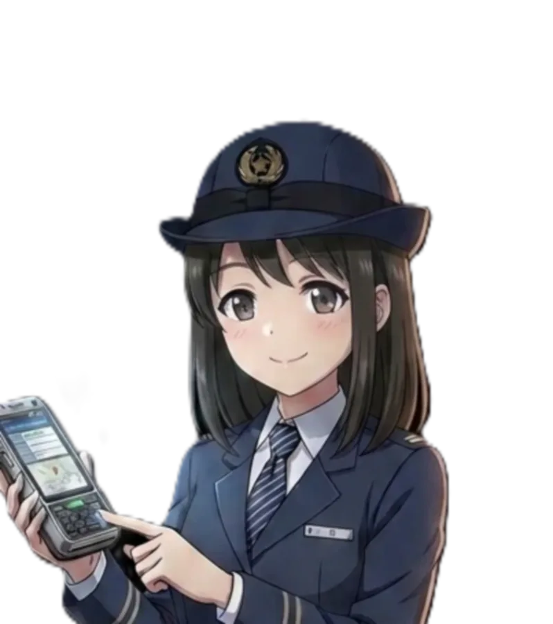

덕빈권 (빈주/효빈) 대중교통 마스코트
| 빈주도시철도공사 & 코레일 |
빈주 1호선 | 빈주 2호선 | 빈효선 (코레일) |
|---|---|---|---|
| 박빛나 (1호선 및 총괄) |
 김소빈(2호선 전담 신입) |
 전노아 전노아(코레일 협력) |
|
| * 빈주도시철도공사(BURC)는 그동안 마스코트 한 명(박빛나)이 전 노선을 전담하는 혹사를 겪었으나, 2026년 4월 김소빈이 합류하며 마침내 2호선 독박에서 벗어났습니다! | |||
- 1. 개요
- 2. 상세 설정
- 2.1. 성격 및 특징 (합법적 광기와 심리술사)
- 2.2. 업무 능력 (QR 스나이퍼)
- 2.3. 외형 및 신체 (아담하지만 탄탄한 피지컬)
- 2.4. 취향 (아샷추와 탕후루 릴스의 융합)
- 3. 목소리 및 성우 연기 (공포의 연애 서큘레이션)
- 4. 가족 관계 (무적의 늦둥이 막내딸)
- 5. 인간 관계 (효빈 ↔ 덕빈 생태계 파괴자)
- 5.1. 박빛나 (하늘 같은 선배님 겸 애착인형)
- 5.2. 전노아 (ENFP들의 끔찍한 조우)
- 5.3. 하루빈 (월급루팡과 근로기준법의 대결)
- 5.4. 김철수 사장 (천적을 넘어선 조련사)
- 6. 사건 사고 및 재미있는 일화
- 7. 공개 및 팬덤 반응 (2026년 4월의 기적)
- 8. 여담 (TMI)
1. 개요
박빛나: "(경악) ...너 민원인한테 대체 무슨 짓을 한 거야..."
빈주도시철도공사에 강림한 맑은 눈의 광인.
빈주도시철도공사(BURC) 소속 빈주 2호선의 공식 전담 마스코트. 2025년 12월 2호선 개통 이후 살인적인 업무량에 시달리던 박빛나를 구원(?)하기 위해 2026년 4월 전격 공개된 신규 캐릭터다.
이름인 **김소빈(金笑彬)**은 '웃을 소(笑)'에 '빛날 빈(彬)'을 써서 **"빈주의 밝은 미소"**라는 뜻을 담고 있다. 하지만 현장에서는 그 '밝은 미소'를 유지한 채로 규정을 칼같이 들이밀며 진상들을 합법적으로 두들겨 패는 '맑은 눈의 광인(맑눈광)' 기질을 여과 없이 뽐내고 있다. 현재는 박빛나 밑에서 OJT(실무 수습)를 받고 있으며, 다가오는 2026년 10월부터 공식적인 단독 홍보 활동을 시작할 예정이다. 빛나 주임의 사표를 유예시킨 공신이자 동시에 새로운 위장병의 근원.
2. 상세 설정
2.1. 성격 및 특징 (합법적 광기와 심리술사)
전형적인 ENFP(재기발랄한 활동가)이자 MZ세대 신입사원의 표본이다. 눈치 백단에 속을 앓는 ISFJ 박빛나와는 정반대로, '본인이 하고 싶은 말은 웃으면서 다 하는' 무서운 멘탈의 소유자다. 그녀의 광기는 무질서한 것이 아니라 철저히 사규와 법에 기반한 '합법적 광기'라는 점에서 더욱 무섭다.
- 해맑은 팩폭기: 고객센터에 전화를 걸어 "내가 누군지 알아?!"라며 호통치는 악성 민원인에게, 세상 상냥한 목소리로 "네~ 고객님은 방금 역무원에게 폭언을 하신 철도안전법 위반 피의자십니다~ 500만 원 이하의 과태료 대상이신데 경찰 부를까요? 헤헤^^"라고 응수한다.
- 심리학과 전공자의 위엄: 덕북대 심리학과 출신답게 상대방의 심리를 교묘하게 파고든다. 억지를 부리는 취객에게 "고객님, 지금 화가 나신 건 2호선 배차 간격 때문이 아니라 직장 상사에게 받은 내재된 억압과 자존감 하락 때문 아닐까요?"라고 진지하게 상담(?)을 해줘서 취객이 그 자리에 주저앉아 첫사랑 이름을 부르며 오열하게 만든 전적이 있다.
상담을 빙자한 정신 공격 - 노동법 마스터: 회사 내규와 근로기준법을 달달 외우고 다닌다. 김철수 사장이 퇴근 10분 전에 일을 던져주면, 수첩을 꺼내 들며 "사장님! 연장근로수당은 통상임금의 50% 가산인 거 아시죠? 사장님 법인카드로 결제 올려도 될까요?"라고 맑은 눈으로 되묻는다.
2.2. 업무 능력 (QR 스나이퍼)
선배 박빛나가 묵직한 결제 단말기를 '물리 타격용(건카타)'으로 쓴다면, 소빈은 최신 V2000 역무원 단말기를 스마트폰처럼 자유자재로 다루는 디지털 네이티브다.
그녀의 단말기 화면을 자세히 보면, 빈주 2호선의 기점인 V201 풍은역의 각종 데이터와 횡단 불가역인 민산역 정보가 실시간으로 띄워져 있다. 복잡한 2호선의 시스템을 손바닥 들여다보듯 꿰고 있는 스마트한 신입. 특히 무임승차자를 잡아내는 동체 시력이 타의 추종을 불허하는데, 개찰구 50m 밖에서도 학생용/경로우대용 카드의 불빛 패턴을 스캔해내어 "어머! 고객님! 아버님 카드로 타시면 부가 운임 30배예요!"라며 달려가 단말기로 QR을 찍어버리는 일명 '단말기 스나이핑' 기술을 구사한다.
2.3. 외형 및 신체 (아담하지만 탄탄한 피지컬)
빈주 2호선의 테마색인 보라색 제복을 입고 있다. 1호선 선배인 빛나의 네이비색 블레이저가 중후한 느낌이라면, 소빈의 보라색 제복은 통통 튀는 발랄함을 강조한다. 목에는 넥타이 대신 보라색 체크무늬 리본을 단정하게 맸으며, 어깨까지 내려오는 찰랑거리는 짙은 갈색 머리를 예쁘게 땋아 내리기도 한다.
📏 신체 스펙: 154cm의 요정 체형과 아슬아슬한 B컵
선배 박빛나가 163cm / D컵의 글래머러스한 체형 때문에 매일 블레이저 단추가 터질까 봐 스판덱스를 덧대며 고통(?)받는 반면, 김소빈은 154cm / B76-W56-H80 (B컵)의 요정같이 아담하고 슬림한 체형을 당당하게 드러낸다. 첫 출근 날 치수 수선을 통해 제복을 자신의 핏에 완벽하게 맞춰 입고 나타나 빛나의 부러움을 샀다.
다만 프로필상 기재된 'B컵'에 대해서는 논란(?)이 많은데, 본인은 당당하게 B컵이라고 주장하지만 동료들이나 팬들 사이에서는 "A컵에 가까운 아슬아슬한 B컵 아니냐", "영혼까지 끌어모은 팩트 조작"이라는 합리적 의심을 받고 있다. 이 이야기를 본인 앞에서 꺼내면 심리학과 전공을 살린 무자비한 멘탈 공격이 들어오니 주의하자.
여리여리하고 쪼그마해 보이지만, 옷 핏을 살리기 위해 매주 퇴근 후 기구 필라테스 3회를 절대 빼먹지 않아 코어 근육이 장난이 아니다. 한번은 난동을 부리는 취객이 빛나 주임의 멱살을 잡으려 하자, 옆에 있던 154cm의 소빈이 해맑게 웃으며 취객의 손목을 단숨에 제압해 비틀어버리고 "어머! 고객님! 방금 폭행 미수셨어요! 경찰서 가실래요, 아니면 얌전히 개찰구 밖으로 나가실래요?"라며 압도적인 악력으로 쫓아낸 전설적인 피지컬을 자랑한다. 이것이 자본주의가 낳은 코어다.
2.4. 취향 (아샷추와 탕후루 릴스의 융합)
살기 위해 구내식당 제육볶음과 믹스커피를 들이붓는 빛나와 달리, 철저하게 '나를 위한 소비와 트렌드'를 좇는 전형적인 20대 초반이다.
- 👍 좋아하는 음식: 마라탕 3단계, 아샷추, 통귤 탕후루
점심시간만 되면 배달 앱으로 빈주역 앞 마라탕 맛집에서 가장 매운 맛을 시켜 먹는다. 출근길 한 손에는 항상 '아샷추(아이스티에 에스프레소 샷 추가)' 벤티 사이즈가 들려 있으며, 혈당 스파이크를 막하겠다며 식후 탕후루를 먹으면서도 제로 콜라를 마시는 기적의 논리를 펼친다. - 📱 취미: 인스타 릴스 촬영, 브이로그 편집
업무 중간 쉬는 시간이나 퇴근 직후에 역사 구석 전신거울에서 '지하철 역무원 출근룩 OOTD', '진상 대처법 썰푼다 ㅋㅋㅋ' 같은 릴스를 찍어 올리는 게 취미다. 사장님이 이를 발견하고 회사 홍보용으로 공짜로 써먹으려 제재하려 하자, "사장님, 제 초상권과 편집 저작물은 회사 소유가 아니에요! 외주 단가표 보내드릴 테니 건당 50만 원 입금해 주시면 올려드릴게요!"라고 완벽한 철벽을 쳐버렸다.
3. 목소리 및 성우 연기 (공포의 연애 서큘레이션)
오버워치 '솜브라', 스마일 프리큐어! '황보미(큐어 피스)' 역
김연우 성우 특유의 얄미우면서도 당돌하고, 에너지가 넘치는 통통 튀는 하이톤 연기가 일품이다. 솜브라처럼 얄밉게 씩 웃으면서 "꺄르르! 그건 제 업무가 아닌데요?!"를 시전하여 부장님과 사장님의 멘탈을 해킹(?)해버리는 연기는 김연우 성우의 전매특허다. 빛나가 오열할 때 옆에서 해맑게 코러스(?)를 넣는 연기가 백미.
바케모노가타리 '센고쿠 나데코', 귀멸의 칼날 '칸로지 미츠리' 역
일본 서브컬처계의 전설 '연애 서큘레이션' 급의 극한으로 달콤하고 애교 섞인 톤으로 무장했다. 하지만 그 솜사탕 같은 목소리로 내뱉는 대사가 "고객님~ 지금 하신 욕설은 모욕죄에 해당해서 200만 원 이하의 벌금을 내실 수 있어요오~♡" 같은 살벌한 법적 고지라서, 일본 팬들에게 '공포의 미츠리', '합법적 얀데레(?)'라 불리며 엄청난 화제를 모았다.
4. 가족 관계 (인간 흉기 3형제와 무적의 늦둥이 막내딸)
👑 3남 1녀 집안의 무적의 고명딸
헬스 매니아인 큰오빠, 유도 선수 출신 둘째 오빠, 해병대 수색대 출신 셋째 오빠 사이에서 나이 차이가 크게 나는 늦둥이 막내딸로 태어났다. 오빠들이 전부 덩치가 산만한 인간 흉기들이라 학창 시절 소빈이를 건드리는 학생은 단 한 명도 없었다. 부당한 일이 생기면 절대 참지 않는 '무적의 멘탈'은 바로 이 금강불괴 같은 배경에서 비롯되었다.
👨 아버지: 김대호 (金大虎, Kim Dae-ho)
나이: 58세 (1968년생 / 생일: 2월 20일)
신장: 185cm (한 덩치 하시는 피지컬)
학력/경력: 빈주경찰서 강력계 형사 (강력1팀장)
- 인간 흉기 3형제 유전자의 근원이자, 아들들이 사고 치면 몽둥이를 들지만 막내딸 앞에서는 혀가 반토막 나는 마초 아빠.
- 소빈이 역무원으로 발령받자, "진상 만나면 112보다 아빠한테 먼저 전화해라"라며 직통 번호를 세팅해 주었다.
👩 어머니: 최영란 (崔英蘭, Choi Yeong-ran)
나이: 54세 (1972년생 / 생일: 10월 9일)
신장: 163cm
학력/경력: 빈주 시내 대형 '무한리필 한식뷔페' 사장님
- 밥 먹는 스케일이 식기세척기 급인 아들 셋을 먹여 살리다 보니 아예 뷔페를 차려버린 서열 0위의 여장부. 소빈의 맑눈광 멘탈의 원조.
- 오빠들이 소빈이의 탕후루를 뺏어 먹고 도망가면, 등짝에 정확하게 국자를 투척하여 참교육을 시전하신다.
💪 첫째: 김성빈 (32세)
188cm / 체지방 8% / 피트니스 대표
CV: 시영준 / 미야케 켄타
소빈이 인스타 릴스를 찍을 때 배경에서 강제로 광배근을 펼치고 덤벨을 들어 올려 조회수를 훔쳐 가는 관종. "진상 오면 1일권 줘라. 하체 털어버리게."
🥋 둘째: 김상빈 (29세)
182cm / 유도 국가대표 상비군 출신
CV: 안효민 / 키무라 스바루
전설의 봉고차 강림 사건 주동자. 소빈의 단축번호 2번이며 호출 시 불도저처럼 등장한다. 소빈이 마카롱을 훔쳐 먹으면 말없이 도복 깃을 잡고 메치기를 시전한다.
🪖 셋째: 김서빈 (27세)
180cm / 해병대 수색대 병장 만기 전역
CV: 민승우 / 오카모토 노부히코
탕후루 갈취범이자 단축번호 1번. 소빈이 야간 당직을 서는 날이면 역 근처 PC방에서 기다렸다가 같이 퇴근해 주는 츤데레 5분 대기조다.
4.1. 👨👦👦 김씨 3형제(성·상·서)의 '내로남불' 케어 시스템
이들 남매의 행동 원리는 아주 단순하면서도 지독하다. 일명 '나만 패 프로토콜'.
- 외부인 접근 시: "우리 소빈이 눈에 눈물 나면 네 눈에는 피눈물 난다." (실전 압축 근육 장착 완료)
- 자기들끼리 있을 때: "야 김소빈, 탕후루 한 입만. 싫어? 그럼 네 인스타 릴스 찍을 때 뒤에서 배경으로 헬스 할 거임."
이게 진짜 오빠다. - 김소빈의 반응: 평소엔 오빠들의 장난에 "킹받는다"며 진심으로 짜증을 내지만, 정작 외부의 위협이나 진상이 발생하면 1초의 망설임도 없이 단축번호 1, 2, 3번을 순서대로 누르는 전형적인 'K-막내딸'의 생존 전략을 구사한다.
5. 인간 관계 (효빈 ↔ 덕빈 생태계 파괴자)
- 박빛나 (하늘 같은 선배님 겸 애착인형): 소빈에게 빛나는 아이돌 그 자체다. "선배님 제가 언능 커서 2호선은 다 씹어먹을게요!"라며 매일 뒤를 졸졸 따라다니며 어깨를 주물러준다. 반면 빛나는 소빈이 너무 예쁘고 고맙지만, 이 해맑은 후배가 언제 진상이나 사장님한테 팩폭을 날릴지 몰라 항상 대기 상태다. 소빈이 웃으면서 "고객님^^" 하고 입을 여는 순간, 빛나가 빛의 속도로 튀어나와 소빈의 입을 틀어막는 게 빈주역의 일상 풍경이 되었다.
- 전노아 (ENFP들의 끔찍한 조우): 코레일 빈효선 마스코트이자 극강의 인싸 불도저인 전노아(ENFP)와 김소빈(ENFP)이 만나는 날은 빈주역 대합실의 데시벨이 3배로 폭발하는 날이다. 둘이 만나면 10분 만에 릴스 댄스 챌린지를 찍고 마라탕을 먹으러 사라진다. 빛나는 이 둘이 모여 작당 모의를 할 때마다 회사의 예산이 털리거나 본인의 야근이 늘어난다는 사실을 알고 있기에 멀리서 식은땀만 흘린다.
- 하루빈 (효빈 2호선 / 월급루팡과 근로기준법의 만남): '2호선' 포지션 선배인 효빈교통공사의 하루빈. 하루빈이 합동 행사에서 소빈에게 "야, 너도 대충 사각지대 숨어서 농땡이 치는 법 알려줄까?"라고 꼬드기자, 소빈은 단호하게 고개를 저으며 "선배님! 왜 몰래 쉬세요? 저는 당당하게 사장님한테 휴게 시간 보장 안 하시면 고용노동부에 찌르겠다고 말해서 합법적으로 쉬는데요? 꺄르르!"라고 답해 농땡이 만렙 하루빈마저 경악하게 만들었다.
5.4. 김철수 사장 (천적을 넘어선 조련사)
빛나를 소고기로 길들였던 빈주도시철도의 짠돌이 김철수 사장에게 최초로 등장한 완벽한 하드 카운터.
- 법인카드 강탈 사건: 회식 자리에서 사장님이 늘 가던 '싸구려 돼지고깃집'으로 향하려 하자, 소빈이 앞장서서 "사장님! 요새 MZ 신입 환영회를 누가 냄새 배는 고깃집에서 해요! 마라탕이랑 꿔바로우에 고량주 까시죠!"라며 부서원 전체를 이끌고 역 앞 마라탕 집으로 쳐들어갔다. 김 사장은 땀을 뻘뻘 흘리며 마라탕 3단계를 억지로 삼키며 눈물을 흘렸으나, 속으로는 '소고기보다 회식비가 적게 나왔네...? 이 녀석 예산 절감의 천재인가?' 하고 감탄했다고 한다.
- 절대 통하지 않는 가스라이팅: 사장이 "라떼는 말이야~ 주말에도 나와서 역 청소하고 그랬어~"라고 운을 띄우면, 빛나는 고개를 숙이고 한숨을 쉬지만 소빈은 "우와! 사장님 시대에는 근로기준법이 없었군요! 진짜 미개... 아니, 야만의 시대였네요! 지금은 2026년이라 다행이에요! 헤헤!"라고 해맑게 웃으며 사장님의 말문을 막아버린다.
6. 사건 사고 및 재미있는 일화
🎧 에어팟 노이즈 캔슬링 대참사
수습 첫 달, 탕비실에서 휴식을 취하던 소빈이 에어팟 프로의 '노이즈 캔슬링'을 켜고 아이돌 뮤직비디오를 보고 있었다. 이때 하필 김철수 사장이 탕비실에 들어와 "김 주임! 커피 한 잔만 타줄래?"라고 세 번이나 불렀으나 소빈은 해맑게 릴스만 보고 있었다.
결국 빡친 사장님이 어깨를 툭 치자, 소빈이 에어팟을 한쪽만 빼며 "앗 사장님! 제가 업무 집중력을 높이려고 노캔을 켰더니 못 들었네요! 커피는 저기 자판기가 더 맛있어요!"라고 해맑게 윙크를 날렸다. 김 사장님은 뒷목을 잡고 나갔고, 빛나는 그날 위경련으로 조퇴했다.
🚪 사장실 문짝 파괴 미수 사건
소빈이 주말에 빈주 2호선 관련 긴급 포스터 수정 건으로 3시간 출근한 적이 있었다. 월요일 아침이 되자마자 소빈은 사장실 문을 벌컥 열고 들어가 (문짝이 부서질 뻔했다) "사장님! 주말 특근 수당 결재 서류 여기요! 3시간이니까 점심값 포함해서 6만 원 입금해 주시면 됩니다!"라고 당당하게 외쳤다. 김 사장이 "김 주임, 우리 가족 같은 공기업에서 너무 야박한 거 아니야?"라고 하자, "제 가족은 아빠랑 엄마, 오빠 셋뿐인데요? 사장님 저 입양하실 건가요?"라고 응수해 결국 1시간 만에 입금을 받아냈다.
😭 민산역 심리치료(?) 오열 사건
반대편 승강장 횡단이 불가능한 민산역에서 개찰구를 잘못 찍은 40대 취객이 "역 구조가 이따위냐! 당장 문 열어!"라며 난동을 피웠다. 소빈이 다가가 "고객님, 역 구조에 화내시는 척하지만 사실은 오늘 직장에서 인정받지 못한 억울함과 가정에서의 소외감이 투사된 거 맞으시죠? 집에 가서 사모님한테 따뜻한 말 한마디 못 들어서 여기서 이러시는 거잖아요."라고 심리학과 출신의 날카로운 프로파일링 팩폭을 꽂아 넣었다.
정곡을 찔린 취객은 그 자리에서 무릎을 꿇고 "맞아... 내 인생은 실패했어..."라며 엉엉 울기 시작했고, 소빈은 그를 달래며 자연스럽게 파출소 경찰관들에게 인계했다. 이 사건 이후 소빈은 '민산역의 보라색 사신 겸 심리술사'로 불리게 되었다.
7. 공개 및 팬덤 반응 (2026년 4월의 기적)
🎉 2026년 4월, "드디어 우리 빛나가 퇴근한다!"
2026년 4월, 빈주도시철도공사 공식 홈페이지에 "빈주 2호선에 새로운 바람이 붑니다"라는 문구와 함께 김소빈의 일러스트가 최초 공개되자, 철도 동호인 커뮤니티와 직장인 커뮤니티가 말 그대로 폭발했다.
팬들의 반응은 캐릭터 자체의 외모 찬양보다 "드디어 박빛나 주임님이 2호선 독박에서 해방됐다!!"는 축하가 9할을 차지했다. 일부 극성 팬들은 빈주 본사 앞으로 "김소빈 채용 결재를 승인해 주신 김철수 사장님 감사합니다"라는 화환을 보내기도 했다. 물론 김 사장은 소빈의 맑눈광 기질을 맛본 후 내가 왜 채용했을까 후회 중이다.
8. 여담 (TMI)
-
러브라이브! 스피리추얼 밈 (노조미의 재림?): 그녀가 전담하는 빈주 2호선의 상징색인 보라색(■)이 하필이면 《러브라이브!》의 토죠 노조미 상징색과 완전히 똑같다! 게다가 소빈의 대학 전공이 사람의 마음을 꿰뚫어 보는 심리학이라는 점이 절묘하게 엮여, 진상 민원인의 심리를 탈탈 터는 그녀의 능력을 두고 팬덤에서는 "스피리추얼 파워(Spiritual Power)"라 부르며 열광하고 있다. 팬아트에서는 타로 카드 대신 단말기를 뽑아 들고 "스피리추얼 파워 주입!"을 외치며 무임승차자를 응징하는 모습으로 찰지게 그려진다.
탕비실에서 김철수 사장님의 앞날(주로 위장병과 탈모)을 타로 카드로 점쳐준다는 흉흉한 소문이 있다.와시와시(주물주물)는 고소당할까 봐 참는다고 카더라. - 마리나 씨와 시오리코의 혼종? (외형적 유사성 논란): 일러스트 공개 직후 서브컬처 팬덤 사이에서 외형을 두고 재미있는 토론이 벌어지기도 했다. 단정한 짙은 색 중단발과 보라색 테마 덕분에 《BanG Dream!》의 츠키시마 마리나(CiRCLE 스태프)나 《러브라이브! 니지가사키 학원 스쿨 아이돌 동호회》의 미후네 시오리코와 닮았다는 의견이 쏟아졌다. 특히 시오리코 특유의 '원칙을 따지는 깐깐한 성격과 보라색 눈망울'이 소빈의 '합법적 광기로 사규를 들이미는 모습'과 겹치면서, 일부 팬들은 "시오리코가 한국 지하철 공기업에 취업해서 흑화한 모습 아니냐"는 우스갯소리를 던지기도 했다.
- 박빛나 성덕(성공한 덕후): 빛나 선배의 전설적인 '단말기 퀵드로우(건카타)' 영상을 고등학생 때 유튜브에서 보고 반해서, 빈주도시철도공사에 지원했다. 면접 때 가장 존경하는 인물로 이순신 장군님 대신 '박빛나 주임님'을 꼽아 면접관들을 벙찌게 만들었다.
- 출근룩의 완성은 에어팟 맥스: 제복을 입고 출근할 때 목에 항상 커다란 은색 '에어팟 맥스'를 걸치고 온다. 빛나가 "소빈아, 단정하게 출근해야지..."라고 지적하면 "선배님! 이건 헤드폰이 아니라 제 패션 아이덴티티이자 외부 소음으로부터 저를 보호하는 '귀마개' 의료기기예요!"라고 우겨서 결국 허락(?)을 받아냈다.
- 2026년 10월 본격 데뷔 대기 중: 현재(2026년 4월)는 디자인만 선공개된 채 빛나 선배 곁에서 6개월간의 OJT(실무 수습)를 받고 있는 상태다. 2026년 10월이 되면 수습 딱지를 떼고 빈주 2호선의 전 역에 소빈의 단독 등신대와 안내 음성이 깔릴 예정이다. 팬들은 10월이 오기만을 손꼽아 기다리고 있다.